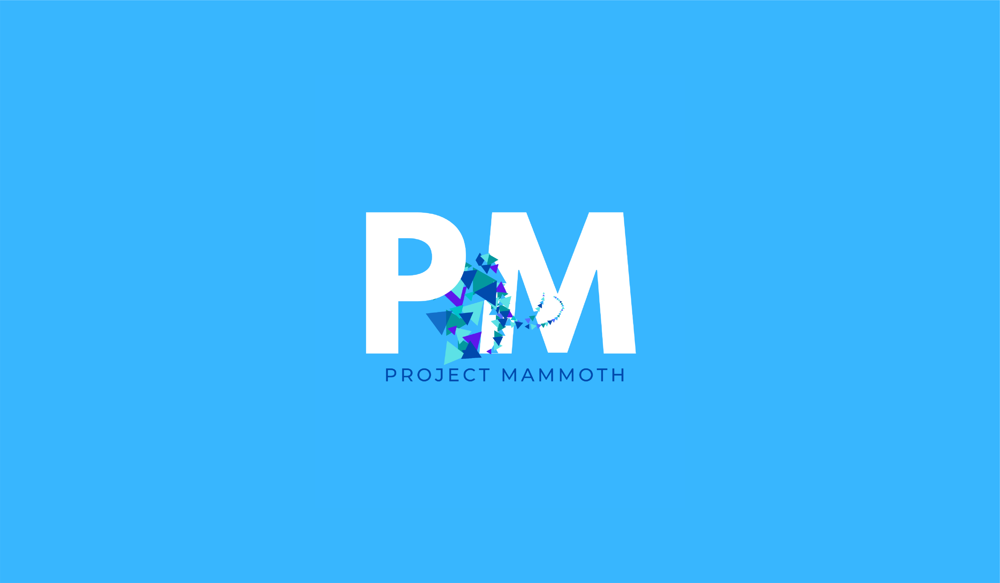

Project Mammoth hologram installation
↓
Project Mammoth is an interactive hologram installation designed by Brock University's Project
Mammoth
student team. The installation is based on biodiversity loss and the impact of human activies on marine
species, aiming to providing a unique educational experience for all ages. Combining hologram technology
with audio/visual and motion components, it encourages educators to consider new methods of presenting
critical topics that would keep viewers more engaged than a traditional lecture or seminar.
This installation is the first project of its kind to be created in Brock University's Interactive Arts
& Sciences program. It was put together by a team of twelve third-year students over a span of eight
months and displayed in the university's Digital Scholarship Lab. I was appointed project lead/manager
for the
installation and was part of the modelling team for asset creation.


Origins & research
The idea to create a hologram installation was based on videos of DIY holograms designed from plastic CD cases and a phone. Our team decided it would be an interesting experiment to see whether we could replicate the effects on a larger scale and integrate interactive elements. When selecting our topic for the installation, we all believed biodiversity loss would be a good starting point in order to prove that holograms served both an educational and interactive purpose. Instead of focusing solely on endangered marine species that were well-known, we selected animals that were less spoken about by the media and environmental groups, such as the blue-footed booby and the acropora jacquelinae coral. We felt it was important to note that biodiversity loss was more serious than society was aware of, as most conservation efforts are generalized and the popularity of certain animals overshadows others.
Modelling & assets
One of the key components of the installation was creating 3D models of the animals we chose to showcase. The modelling team, which consisted of myself and three other members, selected a low-poly style that was friendly and playful, while simultaneously allowing us to add physical details and markings that were unique to each animal. Each model was created and textured in Blender, then rendered for the project's website and design document using Cycles.

African penguin
The African penguin is a currently listed as endangered on the IUCN Red List of Threatened Species. Their main threats are lack of food from overfishing and climate change. Since 1978, the population has dropped more than 50%.
Model created by: Tany Dourev

Striped smooth hound shark
Once calling the coast of southern Brazil home, the striped smooth hound shark is a species of shark known for its recognizable stripes. Due to significant pressure from commercial and artisanal fisheries, the species has become endangered.
Model created by: Tany Dourev

Blue-footed booby
The blue-footed booby is most known for its distinct blue feet. Their population has dropped 50% within the past 20 years due to lack of food and global warming. Overfishing has also affected the sardine population, which is a main source of food for this species.
Model created by: Samantha Savage

Española marine iguana
Found on the Galápagos Islands, the Espanola marine iguana is a unique species of lizard that can swim underwater and changes its colour throughout the mating season. Natural predators and climate change play a role in the reduced numbers of this species.
Model created by: Samantha Savage
North atlantic right whale
Today, there are less than 400 North Atlantic right whales left worldwide — less than 100 of which are breeding females. More than 10% of the species have gone extinct in the past three years, facing threats from entanglement in fishing gear and vessel strikes.
Model created by: Yankeer Xu & Tany Dourev
Acropora jacquelinae
The acropora jacquelinae species of coral is found in the eastern Indian Ocean, the central and the western Pacific Ocean. It currently faces endangerment due to coral bleaching, climate change, human activity, the crown-of-thorns starfish (acanthaster planci) and diseases.
Model created by: Tany Dourev
Polar bear
With the melting polar ice caps, it is estimated that the polar bear species will be extinct within the next 80 years unless substantial action is taken quickly. They are listed as vulnerable on the IUCN Red List of Threatened Species.
Model created by: Tany Dourev

Hawksbill sea turtle
Although climate change and plastic pollution in the ocean have contributed to the endangerment of the Hawksbill sea turtle, its biggest threat is shell poaching and being hunted for meat. Currently, there are approximately 8,000 female turtles left in the species.
Model created by: Will Paskulin
For the visual component of the hologram, the team decided to create environmental models for each animal. We felt it would be more beneficial in communicating our message of awareness if habitats were included, as biodiversity loss often begins with the destruction of such areas. The environments mimicked small domes or "terrariums", and opened to reveal the associated animal. In order for the physics of the hologram to work, the animated domes were rendered in video format from all four sides, then combined alongside narration and sound.


Interactive components
Interactivity was a part of the project that we refined through several iterations. In order for viewers to operate the hologram, it had to receive a form of input that would tell the Python program to switch the visuals to the next animal — this was achieved through the use of a Raspberry Pi and a Flick motion sensor. The sensor was activated through gesture-based motions, such as moving one's hand to the right for the next visual. Using familiar gestures that mimic how we interact with other forms of media (ex. swiping right on a phone to see the next photo) meant younger audiences would also be able to interact with the hologram in a simple manner and it would lessen the confusion on how the sensor board itself worked.
Branding
Project Mammoth's branding was designed to encapsulate a playful approach to the installation. We envisioned our project as something that would cater to audiences of all ages and encouraged education, as opposed to presenting itself solely as a hologram experiment.
The decision to select a mammoth as the logo for Project Mammoth served as a direct reference to the fates of endangered animals. While mammoths are not classified as marine species, they are known for becoming extinct due to habitat loss after the Ice Age and increased pressure from human hunting. If humanity continues to ignore its impact on nature, both the marine species we showcased and all other animals we share the planet with will share the same fate as mammoths did. The logo concept was questioned during our feedback sessions, however the team felt strongly that it represented our interest in raising awareness.
Credits
Project Lead: Tany Dourev
Secondary Lead: Samantha Savage
Research: Kathleen MacDonald, Evan Mason, Will Paskulin, Rogo Jean
Modelling: Tany Dourev, Will Paskulin, Samantha Savage, Xu Yankeer
Sound & Narration: Evan Mason, Wu Dongjian, Rigel Quindipan, Xu Yankeer
Installation: Kathleen MacDonald, Evan Mason, Rogo Jean, Rigel Quindipan, Shannon Kelly, Patrick
Arenas
Coding: Shannon Kelly, Matthew McNeil
Branding: Kathleen MacDonald, Samantha Savage, Will Paskulin
Thank you to Dr. Aaron Mauro of Brock University for his support and guidance throughout the project!